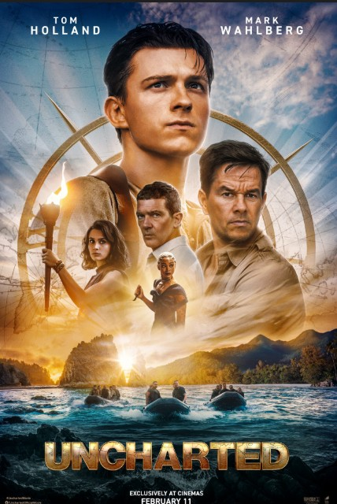

Plot Summary
Nathan Drake is a street-smart young bartender in New York who moonlights as a pickpocket.
His life changes when Victor "Sully" Sullivan recruits him to help find a treasure assembled
during Ferdinand Magellan's voyage — and in exchange, Sully will help Nate find his missing brother
Sam. Their quest takes them from Barcelona to the Philippines, where two 16th-century galleons
hang suspended from cliffs. Competing against the ruthless Santiago Moncada and mercenary Jo Braddock,
Nate and Sully must navigate betrayal, spectacular action, and the mystery of Sam's fate. The film works
as an origin story — showing how a young Nate becomes the adventure-hardened fortune hunter of the games.
Cast
Tom Holland
as Nathan Drake
Spider-Man · Cherry
Holland brings youthful energy to the role — a younger, less experienced Nate learning the ropes for the first time.
Mark Wahlberg
as Victor Sullivan
The Departed · Boogie Nights
A younger, harder-edged Sully — without the iconic mustache for most of the film (it appears in the final scene).
Sophia Ali
as Chloe Frazer
Grey's Anatomy · The Wilds
Witty, self-serving, and capable. Chloe is always asking whether she's an ally or a rival.
Tati Gabrielle
as Jo Braddock
You · Chilling Adventures
A new character created for the film. The formidable mercenary who serves as the most active physical threat.
Antonio Banderas
as Santiago Moncada
Mask of Zorro · Desperado
A wealthy heir who believes the treasure belongs to his bloodline. Banderas brings effortless menace to the role.
Nolan North
Cameo (original Nate)
Voice of Nathan Drake · all games
The iconic voice of game-Nate appears in a brief cameo. Keep an eye out for the scene with Sully.
Official Trailer
Box Office
$401MWorldwide Gross
$120MBudget
40%Critics Score
90%Audience Score
Game vs. Movie
| Aspect | 🎮 The Games | 🎬 The Movie |
|---|---|---|
| Nathan Drake | Mid-30s, experienced, weathered. Deep history with Sully and Elena. | Young bartender in his 20s, learning the ropes for the first time. |
| Victor Sullivan | Older father figure. Iconic white mustache. Warmth behind the gruffness. | Younger and harder. Mustache only appears at the very end. |
| Tone | Cinematic with deep emotional arcs built across multiple entries. | Lighthearted action-adventure. Fun over depth. |
| Elena Fisher | Core character across 4 games. Nate's moral compass and eventual wife. | Absent from the film entirely. |
| Historical Hook | El Dorado, Shambhala, Iram, Libertalia — each rooted in real legend. | Ferdinand Magellan's lost treasure. Fresh but less fantastical. |
| Verdict | Masterworks of interactive storytelling. UC2 and UC4 among the best games ever made. | A fun, breezy crowd-pleaser. Works best as an intro before you play the games. |